The mechanism, its variants, and then the deep dive: why attention is slow on real GPUs and how FlashAttention 1 → 2 → 3 fixes it — built up from zero GPU knowledge.

01
Self-Attention
Every token produces three vectors — a query Q (what am I looking for?), a key K (what do I contain?), and a value V (what do I give back?). Each token's query is scored against every token's key; the scores become weights after softmax; the output is the weighted mix of all values.
The formula you know. The animation below shows what each step does to the actual matrices.
Figure 1 — Self-Attention: Watch the Matrices Build
1/4
The full pipeline as matrices: the input X (one row per token) flows through three learned projections to produce the Q, K, V matrices, Q×Kᵀ builds the 6×6 score grid, softmax turns each row into weights, and scores×V produces the output — same shape as the input.
02
Cross-Attention
Same machinery, different sources: Q comes from one sequence, K and V from another. In a translation model, each French word being generated queries the English sentence the encoder produced — every new word asks “which source words matter to me right now?”
Figure 2 — Cross-Attention: Q From the Decoder, K·V From the Encoder
1/3
The attention matrix is rectangular: 4 French tokens × 6 English tokens. Each generated word (row) distributes its attention across the source words (columns). No K,V are produced by the decoder side at all.
03
Multi-Head Attention
One attention matrix can only encode one "relationship pattern" between tokens. Multi-head runs h independent attentions in parallel, each on a D/h-dim slice of the embedding. One head can track syntax, another coreference (“it” → “cat”), another long-range structure — then everything is concatenated and mixed by an output projection.
D=8 splits into 4 heads of d=2 each. Each head computes its own 6×6 attention grid — notice the patterns differ (local, global, diagonal, sparse). The heads' outputs concatenate back to D=8 and pass through WO.
04
Attention Patterns & Masks
The N×N matrix is where the quadratic cost lives — so a whole family of methods just doesn't compute parts of it. Causal masking zeroes the future. Sliding-window keeps a band. Sparse patterns keep a band plus a few global tokens. Each is visible as a shape in the matrix.
Figure 4 — The Same Matrix, Four Masks
1/4
Full bidirectional (BERT) → causal (GPT — lower triangle only) → sliding window (Mistral — band of width w, cost O(N·w)) → sparse global+local (Longformer — band plus a few columns/rows that every token can see).
05
Linear Attention
A different escape from O(N²): change the order of multiplication. Standard attention computes (QKᵀ)V — the N×N matrix first. If you replace softmax with a kernel feature map φ, you can legally regroup to φ(Q)·(φ(K)ᵀV) — and the inner product φ(K)ᵀV is only d×d, no matter how long the sequence.
Figure 5 — Reorder the Multiplication, Kill the N×N
1/3
Left path: (QKᵀ) first creates the N×N monster, then ×V. Right path: (KᵀV) first creates a tiny d×d matrix, then Q× it — total cost O(N·d²), linear in sequence length. The price: softmax is gone, replaced by a kernel — quality usually drops, which is why frontier LLMs still use exact attention (made fast by Flash).
Other linear-time families
Performer — random feature approximation of the softmax kernel. RWKV / Mamba — recurrent state-space forms, O(N) by carrying a fixed-size state. MQA / GQA — not linear, but shrink K,V heads to cut KV-cache memory (LLaMA-2 70B uses GQA with 8 KV heads).
06
GPU Memory 101 — Everything FlashAttention Needs
You don't need full GPU architecture — just one fact: a GPU has two kinds of memory, and they differ by ~10× in speed and ~4000× in size. Every tensor lives in the big slow one; all math happens next to the small fast one.
The Two Rooms — Size vs Speed
The warehouse (HBM) is where your 80 GB of tensors live — but it's far away. The fast room (SRAM) sits right next to the compute units — but holds only ~20 MB. Box area shows capacity; pipe width shows speed. To compute on anything, its bytes must travel through the thin pipe.
The Memory Wall — Compute Starves
A100 arithmetic: 312 TFLOPS ÷ 2 TB/s means the chip can do 156 math operations in the time one byte arrives. Top: an op that does 156+ FLOPs per byte (matmul) keeps compute fully busy. Bottom: softmax/elementwise ops do ~1 FLOP per byte — compute does its tiny job then idles, waiting. Attention is full of these — it is memory-bound.
07
Why Standard Attention Is Slow — Count the Trips
Standard attention as the GPU executes it: every intermediate matrix is written to the warehouse and read back. Follow the numbered trips — and watch the line widths.
Six Round Trips — Line Width = Bytes Moved
N=4096, d=128. Q, K, V are thin (0.5M values each) — but S and P are 4096×4096 = 16.8M values each, and each one crosses the slow pipe twice (written ↓ then read ↑). The fat red/orange pipes are the problem: they carry temporaries nobody keeps.
The Traffic Bill — To Scale
Every bar's length is proportional to actual bytes moved per head per layer. The two N² matrices account for ~97% of all traffic — and they're pure scratch work. Erase those two fat bars and attention runs up to ~10× faster. That is exactly FlashAttention's plan.
The key realization
The N×N matrices S and P are temporaries — nobody needs them after the output O is computed. We only materialize them because softmax seems to need a full row before it can normalize anything. If softmax could work on pieces of a row, we could compute attention tile-by-tile inside SRAM and never write S or P to HBM at all.
08
Online Softmax — The Trick That Unlocks Everything
One obstacle stands between us and tiling: softmax. It needs the row's max (for numerical stability) and the row's sum — both seem to require the entire row before anything can start.
The Obstacle — Softmax Wants Everything First
Top: the classic pipeline — max over all cells, exponentiate, sum over all cells, divide. Both red stages block until the full row exists. Bottom: but in tiled attention the row arrives in pieces — the classic recipe can't even begin.
The escape: process the row left to right carrying just two running scalars — max-so-far m and rescaled sum-so-far ℓ. When a bigger max appears, one multiplication retroactively fixes everything accumulated so far:
The correction factor e^(m−m_new) rescales all of history with one multiply.
The Walk — [3, 1, 2, 5], One Value at a Time
Four steps, left to right. Watch the m and ℓ chips. Steps 1–3: max stays 3, the sum grows normally. Step 4: x=5 beats the max — the ↻ rescale multiplies the old sum 1.503 by e^(3−5)=0.135 before adding the new term. Bottom strip: the streaming result equals the all-at-once result exactly. No full row was ever needed — so attention rows can be processed in tiles.
Why this changes everything
If softmax can stream, then attention can stream: process K,V in blocks, keep a running (m, ℓ, partial-output) per query row, correct as you go. The N×N matrix never needs to exist. This single algebraic identity is the foundation of FlashAttention.
09
FlashAttention-1 — The Journey
Everything is in place: we know the GPU has a tiny fast room (SRAM) and a huge slow warehouse (HBM), we know the N×N matrix is the villain, and we know online softmax lets us process rows in pieces. Now follow the journey — six pictures, one idea each.
Stop 1 — The Cast: Q, K, V… and the Ghost We Refuse to Build
Three tall thin matrices (N rows, d columns — N is huge, d is small). Standard attention would multiply Q×Kᵀ into the N×N square on the right. FlashAttention's entire mission: get from Q,K,V to O without that square ever existing.
Stop 2 — Cut Everything Into Blocks That Fit the Fast Room
Q, K, V each sliced into 4 row-blocks. The block size is chosen by one rule: one Q-block + one K-block + one V-block + a small working tile must fit together inside SRAM (~the small green room on the right).
Stop 3 — One Tile, Entirely Inside the Fast Room
Q₀ meets K₀ inside SRAM: a small B×B score tile is born, exponentiated, multiplied with V₀ — producing a partial output band O₀ plus two tiny running stats (m = max-so-far, ℓ = sum-so-far). Everything in this picture lives in SRAM. HBM only supplied the three input blocks.
Stop 4 — K and V March Past, Q₀ Stays Seated
Four scenes, left to right. Q₀ never moves. Each new K,V block produces a tile, the tile is folded into O₀ (with the online-softmax rescale ↻ when a new max appears), and the tile is thrown away. O₀ fills up: 25% → 50% → 75% → done. At no point did more than one tile exist.
Stop 5 — The Full Map: Every Q-Block Walks Its Own Row
Zooming out: the ghost N×N grid is covered row-band by row-band. Each Q-block is an independent worker walking left→right through its row of tiles, assembling its band of O. The numbers show walk order. Every tile: born in SRAM, folded, gone.
Stop 6 — The Bill: What Actually Touched Slow Memory
Left: everything HBM ever saw — Q, K, V in, O out, plus a sliver of per-row stats (the O(N)). Right: the two N×N matrices that were never written anywhere. The traffic bars tell the story: ~10× fewer bytes moved, which on a memory-bound op means ~10× less waiting.
What exactly became O(N)?
Careful distinction — three different costs:
Cost
Standard
FlashAttention
Why
Extra memory
O(N²)
O(N)
S, P never materialized — only per-row m, ℓ statistics stored
HBM traffic
O(N² + Nd)
O(N²d²/M)
M = SRAM size; with M ≈ 100KB this is ~10× fewer bytes moved
Compute FLOPs
O(N²d)
O(N²d)
Unchanged! Same math — exact attention. It's faster because the memory wall is gone, not because there's less math.
The backward pass trick: recomputation
Backprop normally needs S and P — but they were never stored! FlashAttention recomputes the tiles during the backward pass from Q, K, V (still in SRAM, still fast). Counter-intuitively, doing more FLOPs is faster than storing/reloading N² values, because FLOPs are cheap and bytes are expensive.
10
FlashAttention-2 — Same Math, Better Workers
FA-1 was IO-optimal but used the GPU's workers poorly (~35% busy). FA-2 changes who owns what:
FA-1 vs FA-2 — Who Walks, Who Sits
Left (FA-1): the outer loop walks K-columns — every worker keeps revisiting the same output rows, so they must coordinate (red collisions). Right (FA-2): each Q-row-band is one independent worker streaming K,V past itself — no sharing, no conflicts. Below: occupancy. FA-2's workers scale with sequence length, so one long sequence alone fills every SM. Plus: the slow ÷ℓ division moves out of the loop, done once at the end. Net ~2× faster.
11
FlashAttention-3 — Stop Taking Turns
On an H100, FA-2 still alternates: load a tile, compute a tile, load, compute. Hopper hardware can do both simultaneously — FA-3 is the kernel rewrite that exploits it.
FA-2 vs FA-3 — Turn-Taking vs Full Overlap
Top: FA-2's timeline — memory and compute alternate, each lane idle half the time. Middle: FA-3 — producer warps drive the TMA engine to prefetch tile i+1 while tensor cores compute tile i; and two warpgroups ping-pong so one's softmax overlaps the other's matmul. Bottom: the payoff on H100 — 370 → 740 TFLOPS (BF16), ~1.2 PFLOPS with FP8.
The Full Picture
Standard
FA-1 (2022)
FA-2 (2023)
FA-3 (2024)
Core idea
materialize N×N
tiling + online softmax
parallelism rewrite
async hardware overlap
Extra memory
O(N²)
O(N)
O(N)
O(N)
Exact?
✓
✓ exact
✓ exact
✓ exact (FP8 ≈)
A100 util
~10–20%
~30–40%
~50–70%
—
H100 util
—
—
~35%
~75% (740 TFLOPS)
Key enabler
—
SRAM tiling
loop swap, seq-parallel
TMA, WGMMA, ping-pong, FP8
Using it in practice
FlashAttention is free lunch: torch.nn.functional.scaled_dot_product_attention or flash-attn picks the right kernel automatically. The win compounds with context length — at N in the thousands and beyond, Flash gives 2–4× end-to-end training speedups and lets you fit much longer sequences in the same VRAM.